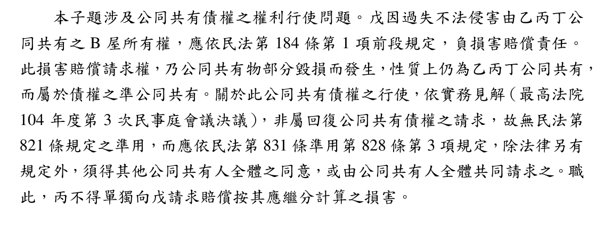
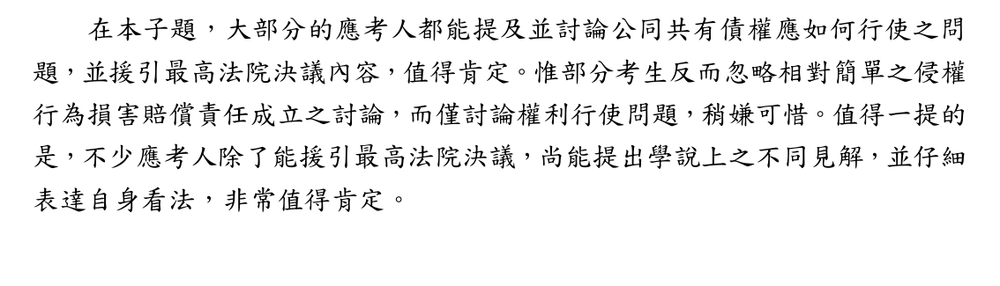

房子燒壞了，丙能只要自己那一份嗎？
111年律師第二試｜民法與民事訴訟法（一）｜第一題第（三）小題（20分）
題目
這一題有四個小題。本頁只做第（三）小題，用得到的事實畫黃色底線。
- （一）丙、丁得否請求乙將A屋登記為乙、丙、丁三人公同共有？（20分）
- （二）丙單獨通知乙不得再繼續使用A屋，並請求乙遷出A屋，是否有理？（20分）
- （三）因X大樓住戶戊之過失引發火災，致B屋部分毀損。丙得否單獨向戊請求賠償按其應繼分計算之損害？（20分）本頁只做這一題
- （四）乙利用其為A屋所有權登記名義人之機會，提供A屋予不知乙僅係A屋出名人之庚設定最高限額新臺幣（下同）480萬元之抵押權，以擔保乙於設定時向庚實際借得之420萬元借款債務。嗣因乙未能清償前開債務，庚遂聲請法院拍賣A屋，並就拍定之價金受償390萬元，其餘30萬元仍未獲清償。之後，乙、丙、丁就甲之遺產完成分割協議，各取得三分之一。如丙、丁就乙前開處分A屋，得依侵權行為規定向乙請求賠償之權利已經時效完成，則丙、丁得否另為如下之請求？（40分）1.乙應給付丙、丁各160萬元 2.乙應給付丙、丁各140萬元 3.乙應給付丙、丁各130萬元
影片說明
影片依序示範：主播介紹、整題讀一遍並框出第（三）小題、四個人與火災、學弟學姊帶出三個問題、第184條、共同存錢筒、104年度決議、回到本案、只要自己那一份為什麼也不行、和上一集比較、三個易錯點，最後把擬答從頭看一遍。
人物與B屋
| 人 | 身分 | 本小題的角色 |
|---|---|---|
| 乙、丙、丁 | 甲的繼承人，B屋登記為三人公同共有 | 被害人，三人一起是損害賠償的債權人 |
| 丙 | 其中一位繼承人 | 想單獨請求，而且只要按應繼分計算的那一份 |
| 戊 | X大樓住戶 | 過失引發火災，是賠償的債務人 |
答題順序：三個問題
閱卷委員指出，大部分考生能討論公同共有債權的行使並引用決議，但部分考生忽略相對簡單的侵權行為責任成立，只討論權利行使。
先分清楚：請求權基礎與輔助規範
| 條文 | 在本題的角色 |
|---|---|
| 第184條第1項前段 | 請求權基礎：故意或過失不法侵害他人權利 |
| 第196條 | 輔助：賠償物因毀損所減少的價額 |
| 第831條 | 輔助：所有權以外的財產權（債權）由數人公同共有時，準用公同共有的規定 |
| 第831條準用第828條第3項 | 輔助：公同共有債權要怎麼行使 |
| 第828條第2項準用第821條 | 不適用：那是回復共有物的請求 |
本題用到的條文
先看要件，再套本案事實。原文中畫底線的部分，就是本題用到的那一句。
民法第184條第1項前段：侵權行為（第①問）
因故意或過失，不法侵害他人之權利者，負損害賠償責任。故意以背於善良風俗之方法，加損害於他人者亦同。
白話因為故意或不小心，弄壞別人的權利，就要賠。
例子鄰居炒菜忘了關火，火燒到你家的牆，鄰居要賠。
| 要件 | 本案事實 | 結果 |
|---|---|---|
| 故意或過失 | 戊之過失引發火災 | ✓ |
| 不法侵害他人之權利 | B屋部分毀損，侵害乙、丙、丁的所有權 | ✓ |
| 損害與因果關係 | 火災致B屋部分毀損 | ✓ |
民法第196條：物被毀損的賠償範圍（第①問）
不法毀損他人之物者，被害人得請求賠償其物因毀損所減少之價額。
白話東西被弄壞，可以請求賠償它因此變少的價值。
本題戊要賠償B屋因毀損所減少的價額。
民法第831條：債權也能公同共有（第②問）
本節規定，於所有權以外之財產權，由數人共有或公同共有者準用之。
白話共有、公同共有的規定，不只用在房子、土地，債權等其他財產權由數人共有時也準用。
本題B屋毀損產生的損害賠償請求權，仍由乙、丙、丁公同共有，稱為債權的準公同共有。
民法第828條第3項：公同共有物的權利行使（第③問）
公同共有物之處分及其他之權利行使，除法律另有規定外，應得公同共有人全體之同意。
白話大家一起擁有的東西，要處分或行使權利，原則上要大家都同意。
例子三兄妹共同繼承的存款，要領出來，三人都要同意。
本題經第831條準用到公同共有債權：丙要行使賠償請求權，要得乙、丁同意，或三人一起請求。
第821條、第828條第2項、第1151條（點開看）
民法第821條
各共有人對於第三人，得就共有物之全部為本於所有權之請求。但回復共有物之請求，僅得為共有人全體之利益為之。
民法第828條第2項
第八百二十條、第八百二十一條及第八百二十六條之一規定，於公同共有準用之。
民法第1151條
繼承人有數人時，在分割遺產前，各繼承人對於遺產全部為公同共有。
以上條文均依全國法規資料庫現行條文核對（2026-11-19）。
比較：兩種請求，行使方式不同
| 回復公同共有物的請求 | 公同共有債權的行使 | |
|---|---|---|
| 例子 | 有人占用B屋，請求返還B屋 | 請求戊賠償B屋毀損的損害 |
| 依據 | 第828條第2項準用第821條 | 第831條準用第828條第3項 |
| 一人能否行使 | 可以，但須為全體利益 | 原則上不行，要全體同意或全體共同請求 |
| 本題 | 不適用 | ✕ 丙不得單獨請求 |
| 上一題（二） | 本題（三） | |
|---|---|---|
| 被請求的人 | 乙（自己也是繼承人） | 戊（外人） |
| 「全體」包括誰 | 乙以外的丙、丁（112台上1587：不含相對立的被上訴人） | 乙、丙、丁三人 |
答題地圖
考選部評分要點與閱卷委員的話

閱卷委員的話：
- 大部分考生都能討論公同共有債權應如何行使，並援引最高法院決議，值得肯定。
- 部分考生忽略侵權行為損害賠償責任成立的討論，只討論權利行使，稍嫌可惜。
- 不少考生能提出學說上的不同見解，並仔細表達自身看法，非常值得肯定。

來源：考選部〈111年司法官、律師考試第二試法律專業科目評分要點與閱卷委員的話〉民法與民事訴訟法（一）第2、4頁，已轉成圖片逐頁核對。
實務見解
最高法院104年度第3次民事庭會議決議（104.02.03）
公同共有債權人起訴請求債務人履行債務，係公同共有債權之權利行使，非屬回復公同共有債權之請求，尚無民法第八百二十一條規定之準用；而應依同法第八百三十一條準用第八百二十八條第三項規定，除法律另有規定外，須得其他公同共有人全體之同意，或由公同共有人全體為原告，其當事人之適格始無欠缺。
本題評分要點引用這則決議。決議提案中另有一說，主張可依第821條但書由一人為全體利益請求向全體給付，但沒有被採納。
最高法院109年度台上字第3071號民事判決（110.09.29）
繼承人因繼承而取得之遺產，於受侵害時，其所生之損害賠償或不當得利債權，乃公同共有債權。此損害賠償或不當得利債權既為全體繼承人公同共有，繼承人即公同共有人中一人或數人，請求就自己可分得部分為給付，非法所許。
本題直接回答「按其應繼分計算之損害」：繼承人不能請求只給付自己可分得的部分。該案的被告是繼承人，本題的戊是第三人；本頁引用的是判決對這類債權的一般說明。
歷審本判決廢棄發回；更審（臺灣高等法院臺中分院110年度重上更一字第98號）112年2月15日判決後，最高法院112年度台上字第1454號裁定駁回上訴（113.06.05）。
擬答
丙不得單獨向戊請求賠償按其應繼分計算之損害。
一、戊應負侵權行為損害賠償責任
戊因過失引發火災，致B屋部分毀損，不法侵害乙、丙、丁之所有權，應依第184條第1項前段負損害賠償責任，賠償B屋因毀損所減少之價額（第196條）。
二、損害賠償請求權屬乙、丙、丁公同共有
B屋為乙、丙、丁公同共有，因其部分毀損所生之損害賠償請求權，性質上仍為全體公同共有，屬債權之準公同共有（第831條）。
三、丙不得單獨行使
（一）公同共有債權之行使，非屬回復公同共有債權之請求，無第828條第2項準用第821條之適用，應依第831條準用第828條第3項，除法律另有規定外，須得其他公同共有人全體之同意，或由全體共同請求（最高法院104年度第3次民事庭會議決議）。題示丙單獨請求，未見乙、丁同意，自有未合。
（二）縱認得準用第821條但書，亦僅得為全體利益，請求向全體給付。繼承人請求就自己可分得部分為給付，非法所許（109台上3071）。丙請求賠償按其應繼分計算之損害，亦無理由。
擬答423字（含標題、標點與數字，不含空白，以程式計算）。20分題目參考上限429字（120分鐘×20/150＝16分鐘，扣讀題3分鐘，13分鐘×每分鐘約33字）。
互動：換一個情形，結論會怎樣？
本題的關鍵是「誰去請求」與「請求給誰」。先自己想想，再點。
第二個分頁是本頁為了對照決議所做的假設；第三個分頁連到上一題的判決見解。本頁推論
學說補充
閱卷委員肯定考生提出學說上的不同見解。本頁尚未加入可核對的學說文獻，只介紹決議提案中未被採納的另一說，不把它當成學說。
預想易錯點
①依閱卷委員的話整理，②依決議整理，③依109台上3071整理。
| 可能的錯誤 | 應該怎麼寫 |
|---|---|
| ① 只討論權利行使，漏了侵權行為成立 | 先寫第184條第1項前段的要件與涵攝。 |
| ② 用第828條第2項準用第821條，讓丙單獨請求 | 公同共有債權的行使沒有第821條的準用，應依第831條準用第828條第3項。 |
| ③ 以為可以按應繼分，請求賠給自己 | 繼承人請求就自己可分得部分為給付，非法所許。 |
延伸思考
參考資料
歡迎指正
相關連結
民法講義總覽 下一題：111年第一題（四）借名處分、給付不能與不當得利 上一題：111年第一題（二）使用借貸與終止權 111年第一題（一）借名登記與繼承 GitHub 原始檔